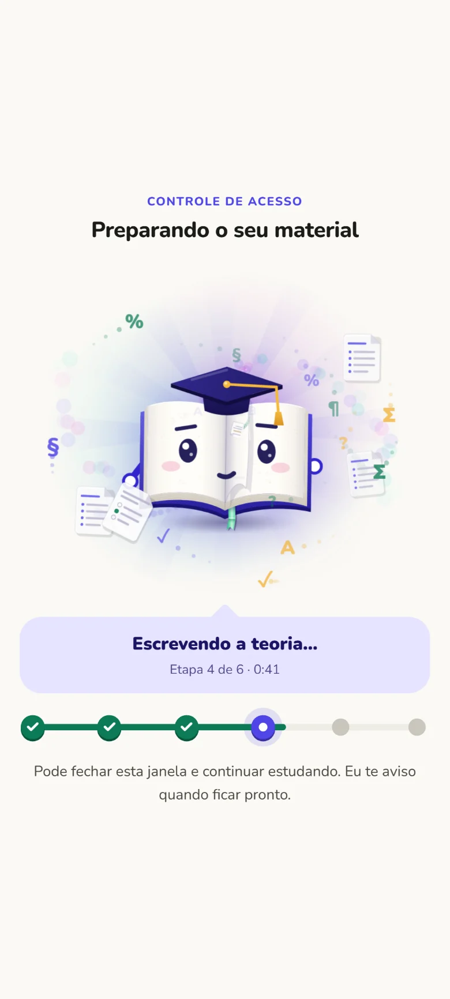

Como funciona
Quatro passos. Do terceiro em diante, é o que você faz todo dia.
Escolha o edital
Procure pelo órgão, cargo ou sigla no catálogo. Se o seu não estiver lá, mande o PDF e as matérias saem organizadas.
Diga sua rotina
Quanto tempo por dia, quais dias e a data da prova. O plano usa isso e o peso de cada matéria no edital.
Estude o tópico do dia
Teoria em capítulos, resumo, flashcards, dicas e pegadinhas. Grife o que importa e anote na margem.
Treine e revise
Questões comentadas logo depois da teoria, e o tópico volta nas revisões para não ser esquecido.
O que você encontra no app
Um plano que cabe na sua semana
O plano mostra o que estudar em cada dia, alterna as matérias pelo peso e coloca as questões logo depois da teoria do mesmo tópico.
- Se você atrasar, ele se reorganiza
- O que ficou para trás volta primeiro, sem apagar o que você já fez e sem lotar o dia seguinte.
- Previsão honesta
- Mostra em que dia o edital inteiro é visto no seu ritmo e avisa quando não cabe até a prova.

Material de cada tópico, com as fontes no fim
Para cada tópico do edital: teoria em capítulos, resumo, flashcards, dicas e as pegadinhas mais comuns. Lei e conteúdo vêm de fontes oficiais, listadas para você conferir.
- Grife e anote
- Selecione um trecho para grifar. Os grifos vão para o seu caderno de estudo e levam de volta ao ponto exato da teoria.


Questões no estilo da sua banca
Cada alternativa tem explicação, inclusive as erradas. Você marca, risca as que descartou e confirma, como na prova.
- Caderno de erros
- Separa o que você errou pelo conceito, para você ver o que realmente falta.
- Simulados
- Com cronômetro e nota por matéria, no formato do seu concurso.

O edital inteiro, com o que pede atenção em destaque
Matérias e tópicos na ordem do edital oficial. As cores somam o peso na prova à dificuldade que você marcou, e cada tópico mostra se já foi estudado.
- Desempenho por matéria
- Acerto das últimas semanas, da matéria mais forte para a mais fraca.

Esse é o Folha
Um livrinho de capelo que estuda junto com você. Ele avisa quando o tempo planejado acabou, comemora os acertos e diz o que vem a seguir. Sequência de dias, XP e emblemas ajudam a não largar no meio.
Planos
Plano de estudo, leitura, treino e revisões funcionam no grátis. O que muda é quanto material novo é escrito para você a cada mês.
R$ 0
para sempre
- Materiais completos10 por mês
- Lotes de questões3 por mês
- Simulado1 para testar
- Edital pelo PDF—
- Editais do catálogoaté 5
- Plano de estudo1
R$ 24,90 /mês
ou R$ 249 por ano
- Materiais completos25 por mês
- Lotes de questões10 por mês
- Simulados3 por mês
- Edital pelo PDF2 por mês
- Editais do catálogoaté 15
- Planos de estudo3 por mês
R$ 49,90 /mês
ou R$ 499 por ano
- Materiais completos40 por mês
- Lotes de questões25 por mês
- Simulados6 por mês
- Edital pelo PDF5 por mês
- Editais do catálogosem limite
- Planos de estudo10 por mês
Cada lote traz até 10 questões; cada simulado, até 30. Assinatura pela Google Play, cancela quando quiser. O plano vale no celular e em app.estudario.com.br, na mesma conta.
Dúvidas
Funciona para o meu concurso?
Procure o seu no catálogo: são 586 editais prontos, de tribunais, polícias, bancos, controle e fiscal, entre outros. Se não estiver lá, nos planos pagos você manda o PDF do edital e as matérias saem organizadas.
Precisa de internet?
Para estudar, não. Leitura, plano, questões salvas e revisões funcionam offline. A internet só entra para gerar material novo e para o celular e o computador ficarem iguais.
De onde vem o material?
Muitos assuntos já vêm prontos da biblioteca do Estudário. Os demais são escritos a partir de fontes oficiais, como a legislação e os órgãos públicos, e passam por uma segunda revisão antes de chegar até você. As fontes ficam listadas no fim de cada material.
Tem para iPhone ou computador?
No computador e no navegador do iPhone, entre em app.estudario.com.br com a sua conta Google. O app do Android e o site mostram o mesmo estudo e se atualizam sozinhos.
Onde ficam meus dados?
No seu celular. Se você entrar com a conta Google, uma cópia fica na sua conta no servidor do Estudário, para o site mostrar o mesmo estudo; só você acessa essa cópia. Detalhes na política de privacidade.
Como cancelo a assinatura?
Pela Google Play, em Pagamentos e assinaturas. O plano continua até o fim do período pago e depois a conta volta para o grátis, sem perder o que você estudou.
Comece pelo edital do seu concurso.
Baixe grátis, escolha o edital e o plano da semana já fica pronto.